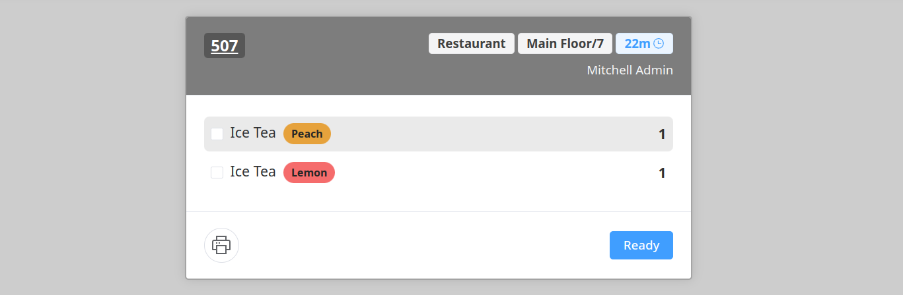

Combine updates or modifications to existing orders into a single, unified order view, or leave them separated.

Highlights orders which exceed a configured preparation time. The order first turns orange and then red.
Easily identify different product variants (such as size, flavor, ...)

Print orders directly from the kitchen screen.
Supported printers:
- Point of Sale / Settings / ePos Printer
- Point of Sale / Settings / Kitchen Printers
- A local printer connected to the kitchen screen
Enable kitchen staff to quickly mark dishes as unavailable directly from the kitchen screen. This helps prevent new orders for out-of-stock items.
The
POS Stock Sync
module is required to activate/deactivate dishes.

Allows kitchen staff to view internal notes of order lines.
Provides an overview of all dishes currently in preparation.
Plays a notification sound whenever a new order is placed, ensuring the kitchen staff is promptly alerted. Can be disabled.
Sort your orders by tracking number or preparation time.
Combine the orders of multiple PoS sessions on a single Kitchen Display.